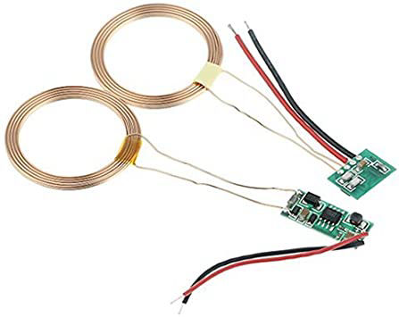
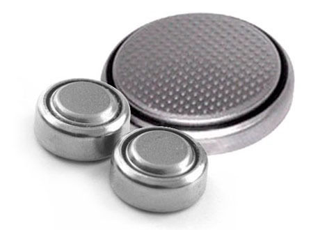
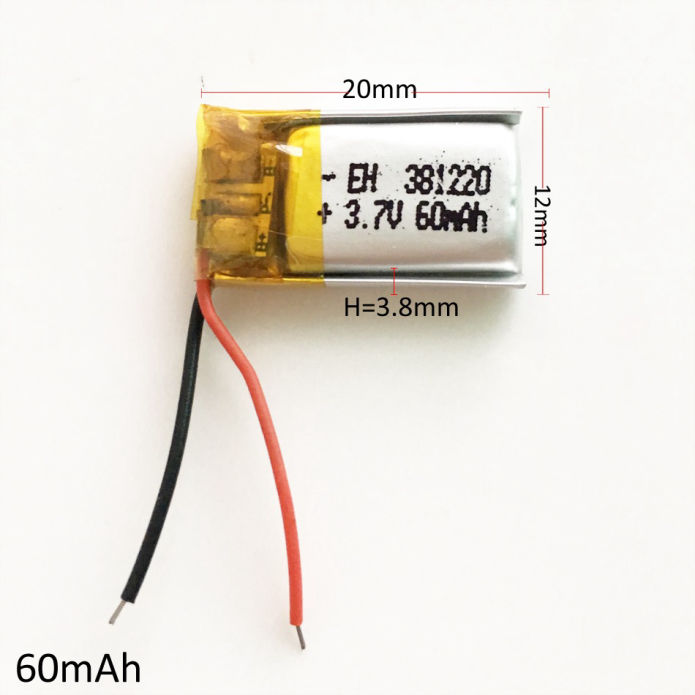
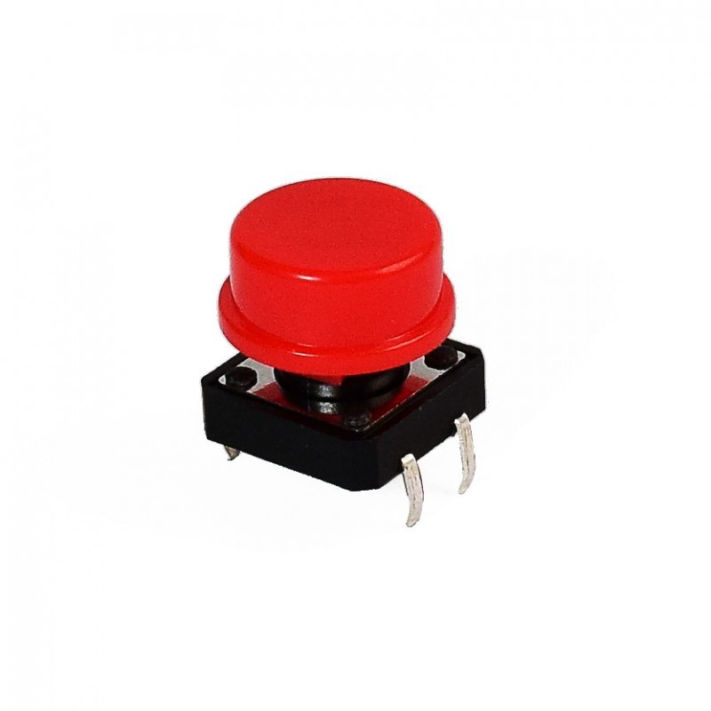
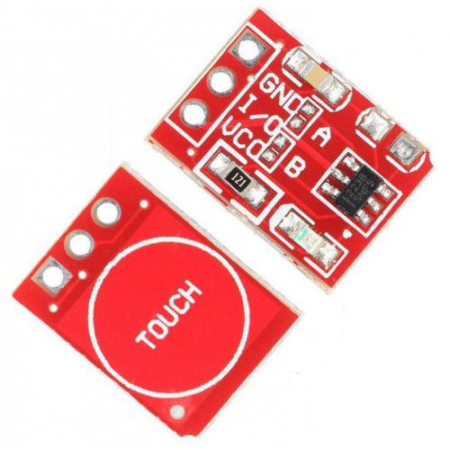
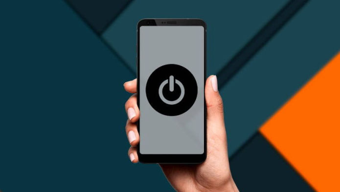
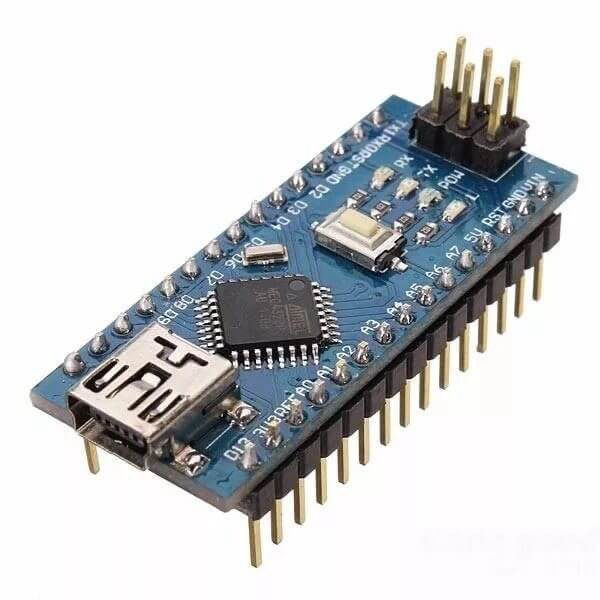
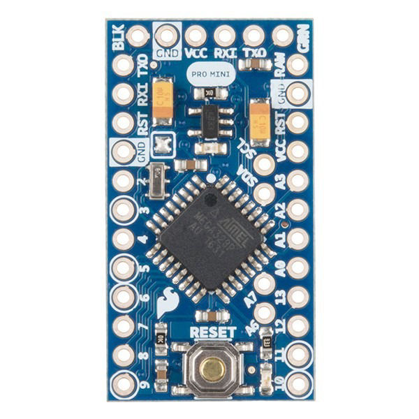
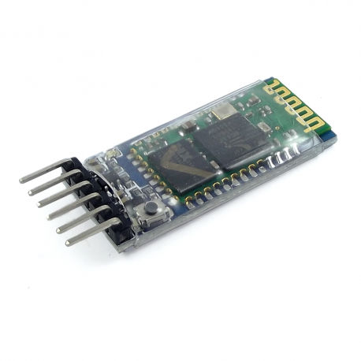
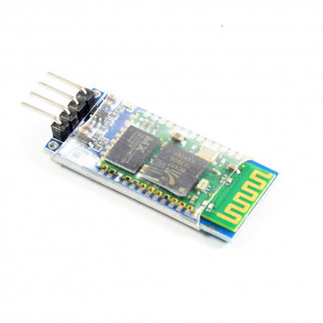

Energizar
Cómo potenciaremos M.A.P.A

Cargador Inalámbrico [1]
Es un dispositivo de dos partes, emisor y receptor. La carga se da entre dos objetos utilizando un campo electromagnético. Para ello, se recomienda conectar al emisor a una fuente de 12V, al receptor a una de 5V, y una corriente de 600mA, lo que genera una estación de carga o shock. La energía resultante se envía por acoplamiento inductivo a un dispositivo electrónico y permite cargar su batería. Aunque la carga por inducción es muy cómoda, fácil de usar y evita el desgaste físico de cables, la velocidad de carga puede verse fuertemente afectada. [2] Además, su costo es relativamente más alto en comparación a otras fuentes de carga, pues solo el sensor ronda entre los 15 y 20 soles.
Imagen recuperada de Amazon

Pila de botón[3]
Conocidas también como pilas de reloj, estas pilas poseen variedad de aplicaciones y usos. En el caso particular de nuestro proyecto, consideramos la pila CR2032 de 3 voltios. Para ello, se requeriría de 3 de estas para alimentar al dispositivo.
Imagen recuperada de Pilanet.es

Batería recargable [4]
Aunque el costo es alto, se pueden recargar y reutilizar, y pueden tener una vida útil enorme cuando se usan correctamente y se cargan de manera segura. Las baterías recargables pueden ofrecer beneficios económicos y ambientales en comparación con las pilas desechables. Algunos tipos de baterías recargables están disponibles en los mismos tamaños que los tipos desechables. Como se ve en la imagen, cuentan con 2 terminales. Uno va a trierra (GND) y otro a la fuente de poder de la tarjeta del dispositivo. Estas proporcionan energía de 7.4-8.2V, que es ideal para alimentar un dispositivo como el que se tiene en mente.
Imagen recuperada de aliexpress.com
Encender
Modos de prender el dispositivo

Botón pulsador [5]
Con un pulsador conectado a una circuito (como Arduino), se puede encender o apagar algún componente del circuito. Requiere estar conectado a una resistencia. Sin embargo, tiene la desventaja de que el usuario debe presionar el botón en todo momento para que funcione, lo cual no es práctico para nuestro proyecto.
Imagen recuperada de Naylamp Mechatronics

Botón táctil TTP223 [6]
Este es un sensor táctil compatible con arduino y otros microcontroladores similares. Su tamaño es de 15x11 milímetros y puede detectar la cercanía de los dedos para funcionar.
Su función usual es que solo brinde energía cuando se está presionando, pero si se suelda el puente B de la parte posterior se podrá cambiar su función para que se prenda al tocarlo una vez y se apague al volver a pulsarlo, como se puede ver en este video.
Imagen recuperada de dnatechindia.com

Desde el celular [7]
Se consideró la posibilidad de que el encendido se dé directamente desde el celular. Para esto ser posible se requiere que ambos dispositivos se vinculen vía Bluetooth y que la aplicación de control esté instalada y diseñada. No implicaría costo adicional, siendo la principal dificultad el código en este caso.
Imagen recuperada de masmovil.es
Procesar
Procesador de datos que usaremos
Raspberry PI Zero [14]
Este cuenta con un intérprete incorporado para el lenguaje de programación Python, con memoria propia y opciones para salidas de vídeo. Además, puede funcionar de manera independiente y ejecutar aplicaciones. Mas un problema es el tamaño (65x30 mm), que lo hace grande para nuestro proyecto. Asimismo, es el mismo usuario el que tiene que descargar y configurar el sistema por cuenta propia.
Imagen recuperada de Naylamp Mechatronics.

Arduino Nano [15]
Esta tarjeta permite un fácil diseño de circuitos, además de una ventaja respecto a otras opciones en el mercado debido a su tamaño pequeño, que permite uso en proyectos más pequeños. Utiliza un microcontrolador ATmega328P. Cuenta con 8 entradas analógicas y memoria FLASH de 32 KB, SRAM de 2KB y EEPROM de 1KB. Sus dimensiones son 18.5 mm x 43.2 mm y posee un costo aproximado de 20 soles.
Imagen recuperada de Naylamp Mechatronics.

Arduino Mini Pro [16]
Esta es una tarjeta diseñada para wearables y proyectos pequeños en los que una tarjeta como el Arduino UNO sea incómoda por su tamaño. Su tamaño es de 3 x 1.8 cm, con un costo aproximado de 15 soles. Posee un microcontrolador ATmega328P,14 pines digitales, 8 pines analogicos y memoria FLASH de 32 KB, SRAM de 2KB y EEPROM de 1KB.
Imagen recuperada de Naylamp Mechatronics.
Enviar y recibir
Funciones asociadas con Bluetooth

Bluetooth HC-05
Pequeño módulo transmisor/receptor TTL diseñado para ser controlado a través de RS232. Permite transmitir como recibir datos a través de tecnología bluetooth. Es un dispositivo muy fácil de usar, diseñado para una configuración de conexión serie inalámbrica transparente y compacto que se controla mediante comandos AT por el puerto serie.Viene configurado de fábrica como "Esclavo"; es decir, espera que un dispositivo bluetooth maestro se conecte a este[17]. Aunque también se podría cambiar para que trabaje como "maestro"; o sea, el que inicia la conexión.Tiene una huella tan pequeña como 12,7 mm x 27mm[18] Este módulo costa de 28 soles aproximadamente.[19]
Imagen recuperada de Naylamp Mechatronics.

Bluetooth HC-06
El módulo Bluetooth nos permite conectar nuestros proyectos con Arduino a un smartphone, celular o PC de forma inalámbrica. Permite la configuración de algunos de sus parámetros de funcionamiento mediante el uso de comando AT[20] .La principal diferencia entre este módulo y el de su competencia reside en que el HC-05 puede ser configurado para ser usado como dispositivo maestro o esclavo, mientras que el HC-06 sólo puede ser usado como esclavo[21].Tiene las dimensiones de 37 mm x 16 mm. Este módulo costa de 25 soles aproximadamente[22].
Imagen recuperada de Naylamp Mechatronics.
Convertir, registrar/almacenar y comparar
Las funciones que se darán dentro de la aplicación
Java [23]
Lenguaje de programación más popular actualmente, pues es de propósito general (aplicaciones web, empresariales, celulares). Es interactiva, concurrente y puede realizar varias acciones a la vez. Es el referente de programación orientado a objetos, posibilita el desarrollo de un código bien estructurado, rápido, seguro y con menos errores.
Imagen recuperada de java.com
Appcelerator Titanium [24]
Software de código libre con el que se crean aplicaciones para móviles y páginas web. El desarrollo de la aplicación se hace íntegramente en JavaScript, por lo que todos los controles tienen que ser creados manualmente, y, para ello, cuenta con una librería JavaScript que permite acceder a los controles del sistema. Las librerías JavaScript son diferentes dependiendo la plataforma en que se trabaje, esto provoca una escasa compatibilidad entre los sistemas operativos.
Imagen recuperada de mfg.fhstp.ac.at
MIT App Inventor [25]
Es un entorno de desarrollo de software creado por Google Labs para la elaboración de aplicaciones destinadas al sistema operativo Android. De forma visual y didáctica, se puede crear una aplicación uniendo una serie de bloques. Su uso es simple, el usuario no requiere mayor conocimiento de programación, pues solo se emplea una serie de herramientas básicas. Para un operador novato puede ser muy ideal; sin embargo, debido a su simplicidad de uso, puede llegar a tener limitaciones.
Imagen recuperada de appinventor.mit.edu